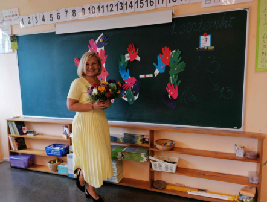

"Mūsdienu skolēni ir advancētāki, ātrāki, gudrāki un drošāki."
Siguldas pilsētas vidusskolā strādā kopš 2011.gada
Intervētājs: Niks Balodis
Cik ilgi Jūs strādājat šajā skolā?
Šajā skolā es strādāju jau 43 gadus.
Kādu priekšmetu Jūs pasniedzat?
Es esmu sākumskolas skolotāja, bet esmu mācījusi arī krievu valodu un matemātiku pamatskolā. Šobrīd pamatskolā mācu arī latviešu valodu.
Ā, tad Jūs zināt daudz valodu?
Jā, nezinu, vai daudz, bet divas noteikti zinu.
Kā jūs izvēlējāties kļūt par skolotāju?
Patiesībā tas notika pavisam nejauši. Kad pabeidzu vidusskolu — toreiz tā bija 11. klase — es nekad nedomāju, ka kļūšu par skolotāju. Mani šī profesija īpaši neinteresēja, un skola vēl jo mazāk. Es gribēju kļūt par žurnālisti. Strādāju vietējā avīzē un rakstīju rakstus. Vēlāk sapratu, ka manas angļu valodas zināšanas nav tik labas, kā gribētos, lai gan skolu pabeidzu ar piecinieku, kas toreiz bija ļoti laba atzīme. Mans klases audzinātājs, kuru ļoti cienīju, ieteica man mēģināt iestāties pedagoģiskajā skolā. Es padomāju — kāpēc ne? Kopā ar draudzeni aizbraucām uz Liepāju un iestājāmies. Toreiz konkurss bija ļoti liels — 12 cilvēki uz vienu vietu. Mēs abas labi mācījāmies, tāpēc mums izdevās iestāties. Tajā laikā skolotājiem paaugstināja algas, un tas arī ietekmēja mūsu izvēli. Toreiz uz dzīvi skatījāmies diezgan nenopietni — kā būs, tā būs.
Kas Jums visvairāk patīk skolotāja darbā?
Man visvairāk patīk tas, ka katra diena ir citādāka. Nekad nav divu vienādu dienu, laiks paiet ļoti ātri, un skolā nekad nav garlaicīgi.
Kā mūsdienu skolēni atšķiras no tiem, kas bija agrāk?
Mūsdienu skolēni ir advancētāki, ātrāki, gudrāki un drošāki. Reizēm viņi ir pārāk drosmīgi un atļaujas vairāk, nekā vajadzētu, taču tajā pašā laikā ar daudziem skolēniem ir ļoti patīkami komunicēt. Tas ir labāk nekā agrāk, kad bērni bija bailīgi un baidījās no skolotāja. Mūsdienās tas vairs nav pieņemami. Laiki mainās.
Kādi ir Jūsu spilgtākie momenti skolas dzīvē?
Patiesībā man ir ļoti daudz spilgtu momentu. Es īpaši labi atceros dažus skolēnus, kuri nebija paši labākie skolēni. Piemēram, man bija skolēns Jānis Auseklis — viens no maniem pirmajiem skolēniem. Viņš bija ļoti aktīvs un nemierīgs puisis. Toreiz viņam bieži nācās iet “riņķot pa gaiteni”, bet viņš tā vietā skrēja. Pēc daudziem gadiem pie manis pienāca jau pieaudzis vīrietis un jautāja: "Skolotāj, vai jūs mani atceraties?"" Es uzreiz atbildēju: "Protams!". Viņš bija tas pats Jānis. Tagad viņš ir izaudzis par ļoti patīkamu cilvēku. Tādu spilgtu atmiņu man ir ļoti daudz.
Kāds ir Jūsu galvenais padoms skolēniem?
Godīgi sakot, man ir grūti dot padomus, jo katrs cilvēks ir individuāls. Tas, kas der vienam, neder citam. Man pašai nepatīk, ja man dod padomus, tāpēc arī es cenšos ar tiem neaizrauties. Ja kāds man kaut ko jautā, es varu pastāstīt par savu pieredzi un pateikt, kā es rīkotos konkrētajā situācijā. Bet vai tas ir padoms — grūti pateikt.
SĀKUMS